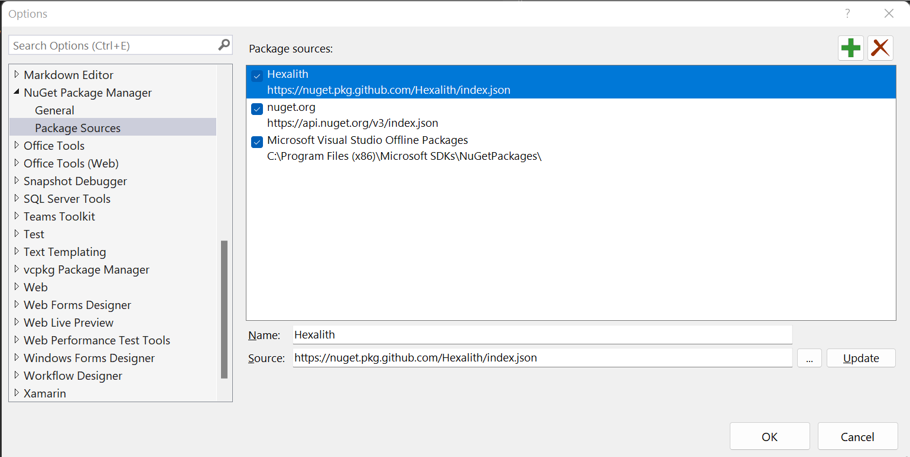

Add preview package source
In this article, we are going to add a new package source pointing to the preview packages.
The preview packages are built each time some code is committed on the main branch, compared to the ones on NuGet, built from the tags/vx.x.x refs.
They are the most up to date versions but not the most stable and can contain breaking changes.
!!! warning We do not suggest you to use the dev packages in production.
Adding Hexalith preview Feed to Visual Studio
In order to be able to use the GitHub preview feed from Visual Studio, you need to add Hexalith packages source. The feed url https://nuget.pkg.github.com/Hexalith/index.json
dotnet nuget add source "https://nuget.pkg.github.com/Hexalith/index.json" --name "Hexalith" --username "<User>" --password "<PersonalAccessToken>"
To remove the source, use the following command:
dotnet nuget remove source "Hexalith"
Visual studio package sources :
